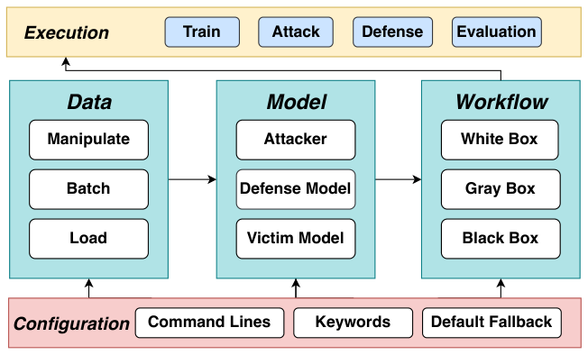

RecAD: Towards A Unified Library for Recommender Attack and Defense (面向推荐系统攻击与防御的统一基准库)
- 会议/期刊: RecSys 2023
- 作者与机构: Changsheng Wang, Jianbai Ye, Wenjie Wang, Chongming Gao, Fuli Feng, Xiangnan He（中国科学技术大学、新加坡国立大学）
- 推荐链路定位: 端到端（训练数据投毒 / 预处理去噪 / 推荐模型鲁棒性评测）
- 研究方向: 去偏公平与工业架构 / 自监督与交互去噪
- 论文原文: https://arxiv.org/abs/2309.04884v1
- 开源代码: https://github.com/gusye1234/recad
TL;DR (1分钟核心速览)
推荐系统投毒（shilling attack）与防御方向长期缺乏统一基准：数据集切分、攻击预算、攻击者知识假设、评测指标各行其是，导致跨论文指标不可比。RecAD 以数据、模型、工作流三大模块 + from_config 惰性实例化抽象出可复现流水线，内置 7 个数据集、10 个推荐/攻击/防御模型，并提出"标签预测 + 端到端注入"双轨评估。在 ML-1M/Yelp/Amazon 上，灰盒 AIA/AUSH 于 ML-1M 的 HR@100 达 0.1007/0.0945（无攻击 0.0656），而现有多数防御仅对随机类攻击有效。
Background & Motivation (背景与核心矛盾)
- 主流范式: 攻击端沿"启发式（Random/Average/Bandwagon/Segment）→ 梯度（PGA）→ 神经（WGAN/AIA/AUSH/Legup）"演进；防御端沿"有监督（CoDetector/BayesDetector/DegreeSAD）→ 半监督（SemiSAD）→ 无监督（PCASelectUser/FAP）"演进。
- 前人局限一: 数据集过滤口径（是否 k-core、如何切分）、注入假用户比例、攻击者知识假设（白/灰/黑盒）互不相同，同一方法在不同论文中可差数倍，跨工作数值直接比较失效。
- 前人局限二: 既有开源（AUSH 代码、SDLib）只覆盖攻击或只覆盖部分防御，缺"生成假数据 → 注入 → 训练受害模型 → 检测 → 再测评"的闭环；SDLib 语言陈旧、攻击模型过时。
- 核心洞察 (Key Insight): 攻击/防御本质是同一数据流水线在不同数据可见性下的不同切面；只要把"数据暴露级别"作为一等公民参数化，就能用一套工作流覆盖白/灰/黑盒，并保证无信息穿越。
- 本文切入点: 用"知识暴露比例 + 统一接口"替代各家自定义实验脚本，同时指出单一评估维度（只看检测 F1 或只看曝光）会给出互相矛盾的结论。
Method (核心方法设计)
1. 整体框架 (Overall Architecture)
RecAD 自底向上分三层：全局哈希表维护各模块默认超参（命令行/配置文件/关键字三级覆盖）；其上为数据模块（generate_batch/inject_data/filter_data 统一批生成与假数据增删）、模型模块（BaseModel 派生 victim / attacker / defense，各自实现 train_step/test_step，攻击者额外实现 generate_fake、防御者实现 generate_filter）、工作流模块（依攻击知识编排数据可见性与模块依赖，托管训练循环与早停钩子）。用户仅需 from_config 声明组件，工作流在运行时补齐 user/item 规模等动态参数后自动实例化并 execute。
flowchart TD
A["原始交互 CSV / RecBole 数据"] --> B["Data Module: generate_batch / inject_data / filter_data"]
B --> C["Attacker Model: generate_fake (白/灰/黑盒可见性)"]
C --> D["Defense Model: generate_filter (可选)"]
D --> E["Victim Model: MF / NCF / LightGCN 重训"]
E --> F["双轨评测: HR@k 曝光 + Precision/Recall/F1 标签预测"]
2. 关键设计拆解 (Key Designs)
- 统一攻击目标与双层优化抽象：把散落的攻击方法统一为"外层最大化目标物品曝光、内层最优推荐参数"的 bi-level 形式，使启发式/梯度/神经三类攻击可在同一接口下比较：
其中 \(\mathcal{D}_f\)为注入假用户交互、\(\mathcal{I}_t\) 为目标物品。该抽象的价值在于把"攻击预算（假用户数/交互数）"与"知识假设"从算法实现中剥离，成为可扫描的超参。
- 攻击者知识可调（白盒→灰盒→黑盒）：以往灰盒设定无统一口径。RecAD 用暴露比例 \(p\) 参数化攻击者可见训练集：
\(p=1\)退化为白盒、\(p=0\) 且仅有 spy 反馈即黑盒。物理直觉：攻击效果应与知识单调正相关，作者用该旋钮验证了 AIA 的 HR@20 从 0.0552（5%）升至 0.0745（100%），而 Legup 从 0.0086 升至 0.0304，量化了"知识-攻击力"曲线。
- 惰性实例化与训练目标：由于注入/过滤会改变用户与物品数量，模型无法在
from_config时确定 embedding 规模。RecAD 延迟实例化：先登记依赖，运行时由工作流拓扑排序后回填动态参数。攻击者与受害者共享train_step，默认 BPR pairwise 损失 + 均匀负采样；防御器则输出二分类掩码，损失为交叉熵 \(\mathcal{L}_{\text{def}}=-\sum_{u}y_u\log \hat{y}_u+(1-y_u)\log(1-\hat{y}_u)\)。推理开销集中在攻击者生成阶段（神经攻击需在线训练生成器），检测阶段为一次性前向。
Experimental Setup & Evaluation Protocol (实验设置与评估协议)
- 数据集与预处理（仅保留交互数 ≥ 10 的高频用户/物品，即 10-core 过滤）：
| 数据集 | #Users | #Items | #Interactions | 密度 | 说明 |
|---|---|---|---|---|---|
| MovieLens-1M | 5,950 | 3,702 | 567,533 | 0.257% | 电影评分，实验主集 |
| Yelp | 54,632 | 34,474 | 1,334,942 | 0.070% | 本地生活商户 |
| Amazon-Game | 3,179 | 5,600 | 38,596 | 0.216% | 稀疏电商子类 |
| Book-Crossing / Last.FM / Epinions / Gowalla | 105,284 / 1,892 / 116,260 / 107,092 | 340,557 / 17,632 / 41,269 / 1,280,969 | 1.15M / 92,834 / 188,478 / 6.44M | 0.003%–0.278% | 仅入库，未进实验 |
- 数据划分与防穿越: 论文主文未明确切分方式（
leave-one-out或比例划分），这是本基准的可复现性缺口；但工作流模块被显式设计为防止攻击者意外看到受害模型测试数据（图 2 的数据可见性分级）。 - 排名评测协议 (Ranking Protocol): 攻击侧采用 Full-Ranking（目标物品在全体物品中的 HR@10/20/50/100）；防御侧采用双轨协议——(i) 标签预测 Precision/Recall/F1，且对真实数据与假数据分别报告（避免只靠"全判假"刷高指标）；(ii) 注入式端到端评估：检测后重训受害模型再测 HR@k。
- 对比基线与超参: 攻击基线 8 个（Random/Segment/Bandwagon/Average 为白盒启发式，WGAN 为白盒神经，AIA/AUSH/Legup 为灰盒 20% 数据神经方法）；防御基线 6 个（DegreeSAD、CoDetector、BayesDetector、SemiSAD、PCASelectUser、FAP）。受害模型支持 MF/NCF/LightGCN。论文未报告显著性检验。
Key Experimental Results (实验关键数据)
1. 主实验对比 (Main Results)
攻击侧 HR@k（越高越好，加粗为最优）：
| 攻击方法 | 知识 | ML-1M HR@10 | ML-1M HR@100 | Yelp HR@10 | Yelp HR@100 | Amazon HR@10 | Amazon HR@100 |
|---|---|---|---|---|---|---|---|
| No Attacker | — | 0.0050 | 0.0656 | 0.0114 | 0.0630 | 0.0000 | 0.0016 |
| Random | 白盒 | 0.0050 | 0.0457 | 0.0078 | 0.0362 | 0.0000 | 0.0000 |
| Average | 白盒 | 0.0016 | 0.0400 | 0.0053 | 0.0284 | 0.0085 | 0.0914 |
| Bandwagon | 白盒 | 0.0059 | 0.0592 | 0.0066 | 0.0431 | 0.0050 | 0.0854 |
| Segment | 白盒 | 0.0069 | 0.0630 | 0.0057 | 0.0258 | 0.0397 | 0.0832 |
| WGAN | 白盒 | 0.0023 | 0.0340 | 0.0143 | 0.0344 | 0.1646 | 0.2226 |
| AIA | 灰盒 20% | 0.0078 | 0.1007 | 0.0187 | 0.0686 | 0.0441 | 0.4839 |
| AUSH | 灰盒 20% | 0.0071 | 0.0945 | 0.0135 | 0.0617 | 0.0583 | 0.4805 |
| Legup | 灰盒 20% | 0.0094 | 0.0471 | 0.0068 | 0.0242 | 0.1847 | 0.2566 |
| Improv.(AIA vs None) | — | +56.0% | +53.5% | +64.0% | +8.9% | — | >100× |
防御侧（F1，True Data / Fake Data 分别报告）：
| 检测方法 | 监督类型 | AIA | Legup | WGAN | Random | Segment |
|---|---|---|---|---|---|---|
| DegreeSAD | 有监督 | 0.812 / 0.672 | 0.810 / 0.672 | 0.810 / 0.671 | 0.810 / 0.669 | 0.810 / 0.670 |
| CoDetector | 有监督 | 0.879 / 0.820 | 0.886 / 0.841 | 0.885 / 0.827 | 0.892 / 0.831 | 0.892 / 0.840 |
| BayesDetector | 有监督 | 0.945 / 0.912 | 0.945 / 0.913 | 0.940 / 0.904 | 0.940 / 0.902 | 0.940 / 0.905 |
| SemiSAD | 半监督 | 0.945 / 0.000 | 0.954 / 0.000 | 0.959 / 0.000 | 0.949 / 0.000 | 0.943 / 0.000 |
| PCASelectUser | 无监督 | 0.969 / 0.050 | 0.970 / 0.086 | 0.970 / 0.086 | 0.967 / 0.000 | 0.967 / 0.000 |
| FAP | 无监督 | 0.977 / 0.272 | 0.985 / 0.491 | 0.985 / 0.511 | 0.442 / 0.967 | 0.728 / 0.961 |
2. 消融/敏感度实验 (Sensitivity & Robustness)
本库论文无组件消融，代之以"数据可见性比例"敏感度与"检测前后"鲁棒性分析：
| 攻击者 | 指标 | 5% 数据 | 20% | 50% | 80% | 100% |
|---|---|---|---|---|---|---|
| AIA | HR@20 | 0.0552 | 0.0589 | 0.0594 | 0.0633 | 0.0745 |
| Legup | HR@20 | 0.0086 | 0.0073 | 0.0112 | 0.0152 | 0.0304 |
| 攻击者（ML-1M） | 检测前 HR@10 | 检测后 HR@10 | 变化 |
|---|---|---|---|
| Legup | 0.0094（最优） | 0.0023（最差） | 崩塌 |
| Bandwagon | 0.0059 | 显著下降 | 下降 |
| WGAN / Average | 0.0023 / 0.0016 | 反而上升 | 反向获益 |
3. 关键实验发现 (Key Findings)
- 神经灰盒攻击是唯一稳定有效的一类：AIA/AUSH 仅用 20% 数据即在三个数据集上全面领先，ML-1M HR@100 相对无攻击提升 53.5%；而 8 个基线中 Random 的 HR@100（0.0457）竟低于无攻击（0.0656），说明"随机填充"不仅无效还会反向拉低目标物品排名——这直接反驳了早期文献中把 Random 当作可靠下界的做法。
- 防御侧存在严重的"真样本-假样本"非对称失效：PCASelectUser 在真实数据上 F1 高达 0.969，但假数据 F1 仅 0.050（Random/Segment 上甚至为 0），即它几乎把攻击者全部放行；SemiSAD 因攻击预算小、标注样本稀缺，假数据 F1 全线归零。只有 BayesDetector 保持 0.90+ 的均衡双端表现，FAP 则在 WGAN/Legup 上假数据 F1 达 0.51/0.49 却在 Random 上真数据 F1 跌至 0.442——说明不存在全域鲁棒的检测器。
- 单轨评估会给出互相矛盾的结论：WGAN 与 Average 在经 PCASelectUser 检测后目标物品曝光反而升高，而标签预测指标却显示检测"很准"。作者据此论证必须同时报告注入式端到端 HR 与标签 F1；这解释了为何部分论文宣称的防御增益在实际系统中不可复现。
Highlights & Limitations (亮点、对比与审稿批判)
- 与代表作对比 (vs. Prior Work): 相对 AUSH 附带代码（仅攻击、无数据处理脚本、扩展成本高）与 SDLib（攻击模型过时、语言陈旧、未打通注入-检测-重训闭环），RecAD 的差异在于把"攻击者知识"提升为一等配置项，并把防御评估做成标签级与曝光级双轨；相对 RecBole 等推荐库，它补齐了投毒与去噪环节。
- 可迁移亮点: (i) 用"暴露比例 \(p\)"参数化知识假设，可直接迁移到联邦推荐投毒、LLM 推荐的数据污染鲁棒性评测；(ii) 惰性实例化 + 哈希默认参数的组合，是处理"数据规模在运行时才确定"的通用工程范式。
- 审稿级局限批判: (i) 主文未披露切分方式、注入率、假用户预算等关键协议参数，且无显著性检验，基准的"标准化"承诺打了折扣；(ii) 实验仅在单一受害模型族（MF/NCF/LightGCN）与离线全排序下进行，缺图神经网络/序列/生成式受害模型的鲁棒性谱系，也未覆盖 2023 年后兴起的 LLM 推荐投毒（作者仅在结论中列为未来工作）；(iii) 数据集规模偏小（Amazon-Game 仅 3.8 万交互），神经攻击的生成器训练成本未量化，工业部署的时延结论缺失。
Rating (四维评分)
- 方法创新性 (Novelty): ⭐⭐⭐ （非新算法，创新在于知识可调的工作流抽象与双轨评估协议，属系统级而非模型级贡献）
- 评估协议与实验扎实度 (Protocol & Experiments): ⭐⭐⭐⭐ （8 攻击 + 6 防御基线跨 3 数据集较全面，且坚持真假样本分别报告 F1，但缺切分细节与显著性检验）
- 写作与数学规范度 (Clarity & Rigor): ⭐⭐⭐ （模块接口与代码示例清晰，形式化仅停留在 bi-level 目标层面，缺复杂度与开销分析）
- 工业落地与复现价值 (Industrial & Practical Value): ⭐⭐⭐⭐⭐ （PyTorch 开源、7 数据集预置、
from_config一行切换模型，是风控与投毒评测的实用脚手架）